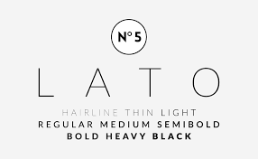
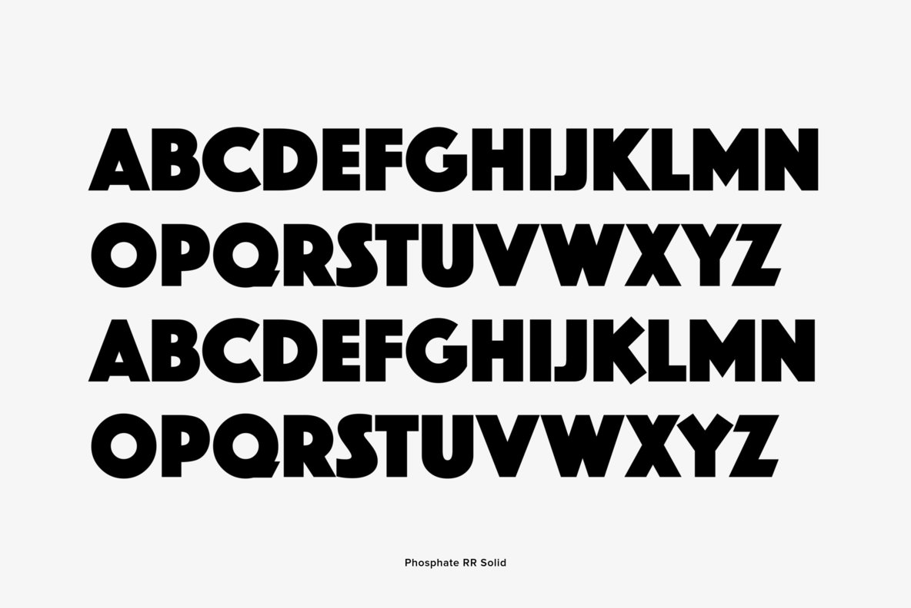
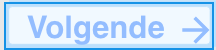
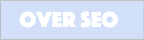

Seo is een combinatie van een muziekfestival en een foodfestival. Het zal plaats vinden op een van de mooiste stranden in Griekenland namelijk Lefkada.
Het is een festival voor jongeren tussen de 18 en 24 jaar oud. Ze kunnen er genieten van de muziek en kunnen daarnaast ook genieten van typische griekse gerecht door de foodtrucks.
Onze visie is jongeren een zeer goede tijd laten beleven in Griekenland voor een goedkope prijs. We willen plezier en sfeer uitstralen.
Het logo van Seo is geschreven in het lettertype Lato.Het logo zelf zal deze kleur bevatten: R=147 G= 187 B= 255 100% of C=45 M=20 Y=0 k=0.
Er bestaan 2 varianten van het logo. Namenlijk het logo op een transparante achtergrond en met een grijze achtergrond. In het logo bevindt zich het teken van de oceaan.
Op deze manier mag het logo niet gebruikt worden. Zo is het veel te smal en komt het niet goed tot zijn recht.
RGB rgb(147,187,255)
HEX #93BDFF
HSL hsl(217°, 100%, 79%)
RGB rgb(82, 116, 209)
HEX #5274d1
HSL hsl(224°, 58%, 57%)
RGB rgb(219, 232, 232)
HEX #dbe8e8
HSL hsl(180°, 22%, 88%)
RGB rgb(231, 232, 232)
HEX #e7e8e8
HSL hsl(180°, 2%, 91%)
RGB rgb(255, 255, 255)
HEX #ffffff
HSL hsl(0°, 0%, 100%)
We maken gebruik van de lettertypes: Lato, Phosphate zowel Solid als Inline
 Knoppen zodat je kan navigreren naar de pagina's: over Seo en Volgende. De padding is 14px,40px. Font size: 20px
 